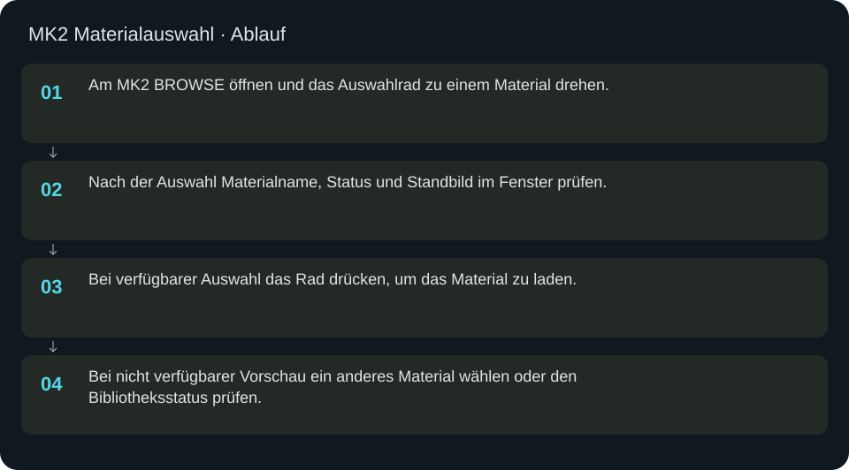
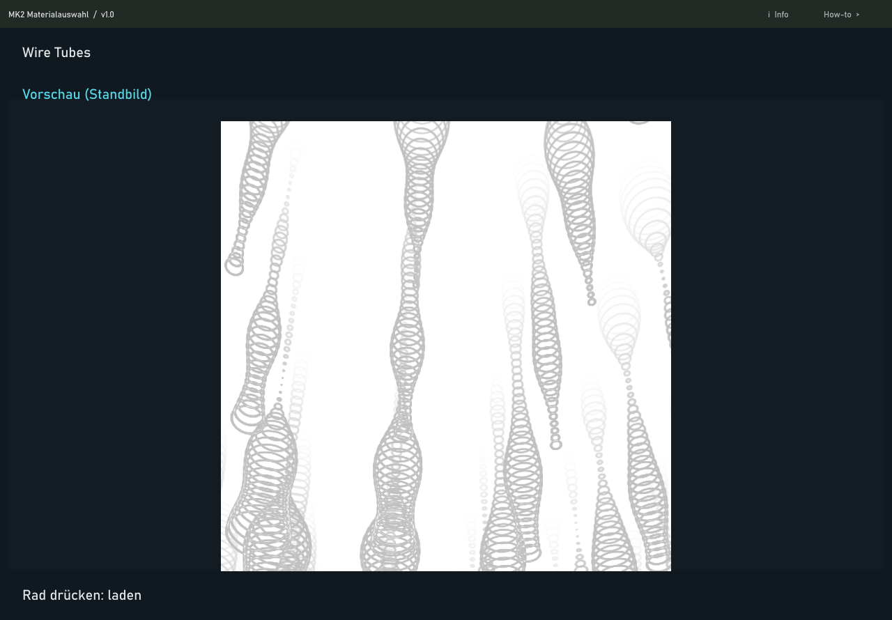

MK2 Materialauswahl
Optionale Desktop-Standbildvorschau; standardmäßig abgeschaltet. Die normale Materialauswahl erfolgt auf dem MK2.
In welcher Reihenfolge?
- Am MK2 BROWSE öffnen und mit dem Auswahlrad ein Material wählen.
- Materialname und Vorschau auf den MK2-Displays prüfen; es öffnet automatisch kein zusätzliches Desktopfenster.
- Das Rad drücken, um die gewählte Auswahl zu laden.
- Das geladene Material bei Bedarf im Player oder in LED PREVIEW prüfen.


Diese Aufnahme dokumentiert den erhaltenen optionalen Desktopdialog. Im aktuellen Standardbetrieb bleibt dieses Fenster beim Durchblättern geschlossen.
Schritt für Schritt
Standardverhalten
Die Desktop-Vorschau ist deaktiviert, damit das Durchblättern keine zusätzliche große Vorschau erzeugt. BROWSE und das Auswahlrad arbeiten auf dem MK2; die Displaybilder, das Laden per Rad und der Player bleiben erhalten. Daraus folgt keine gemessene Aussage über die physische Drehgeschwindigkeit oder Latenz.
Erhaltener optionaler Dialog
Der vorhandene Desktopdialog bleibt aus Kompatibilitätsgründen im Projekt und in der Hilfe dokumentiert. Er wird nur bei ausdrücklich gesetztem desktop_browse_preview: true in config/mk2_windows.json automatisch verwendet; der Release-Standard ist false. Diese Option ist für die normale MK2-Auswahl nicht nötig.
Anzeige bei ausdrücklich aktivierter Vorschau
Oben stehen Materialname und Status, darunter ein eingefrorenes Bild. Vorschau (Standbild) bedeutet eine erzeugte Materialvorschau. Gespeichertes Vorschaubild bezeichnet einen Thumbnail-Fallback, Vorschau nicht verfügbar eine fehlende verwendbare Vorschau. Ein Thumbnail bestätigt keine Shader-Kompatibilität. Das Standbild aktiviert selbst kein Material und ist keine laufende Schrank-LED-Vorschau.
Bedienung und Beispiel
BROWSE → ALL → Material auf dem MK2 wählen → Namen und Displaybild prüfen → Rad drücken. Erst die Ladeaktion aktiviert die Auswahl. Das zusätzliche Desktopfenster muss dazu weder geöffnet noch bedient werden.
Eingaben & Beispiele
Dieser Bildschirm benötigt für den beschriebenen Prüfablauf keine Texteingabe.
Woran erkenne ich Erfolg?
Die erwartete Ansicht öffnet, Status und Vorschau entsprechen der gewählten Aktion, und es erscheint kein Fehler. Änderungen beim nächsten Laden beziehungsweise im Live-Status erneut lesen. Ein erfolgreicher Bildschirmtest beweist weder physische LED-Ausgabe noch korrekte Kameramessung.
Quellennachweis
Dateipfade im Projekt-Repository; die Onlinehilfe gibt keinen allgemeinen Dateisystemzugriff frei.
pixelblaze_mapper/mk2_material_preview.pypixelblaze_mapper/mk2_windows.py
Dialog: /project1/mk2_windows/preview_panel